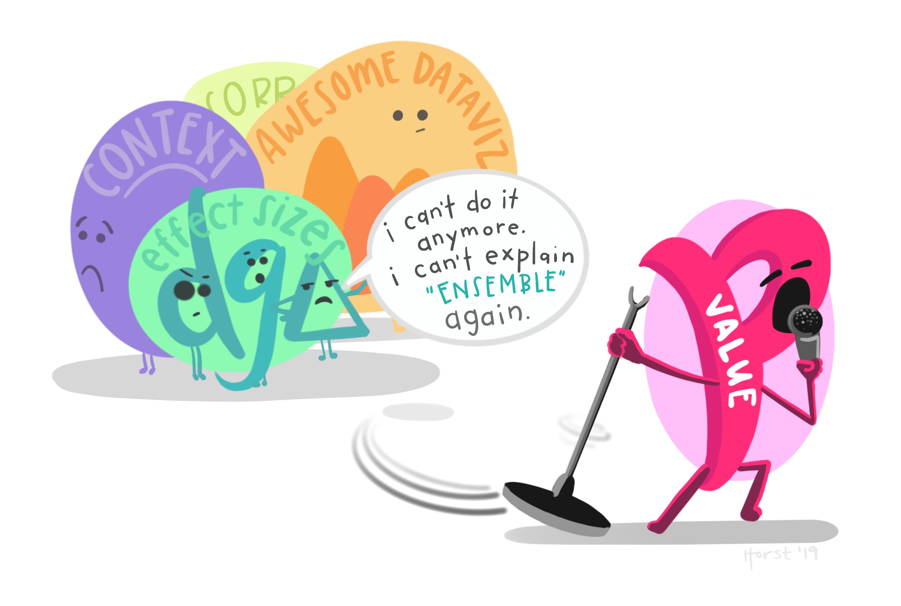

syllabus
Methods in Biostatistics
Math 150, Spring 2023
Class: Tuesdays & Thursdays, 1:15-2:30pm
Jo Hardin
2351 Estella
jo.hardin@pomona.edu
Office Hours (Estella 2351)
Mondays 1:30-3pm
Tuesdays 2:30-3:30pm
Wednesday 9-11am
Thursday 3-4pm
or by appointment
Mentors: Chris Meng & Guy Thampakkul
Tuesday 8-10pm Estella 2131
The course
Methods in Biostatistics is a second course in biostatistics, designed to follow either an Introduction to Statistics or Introduction to Biostatistics course. No biology background is needed, but examples and methods will be focused on those found in the life sciences. In particular, the main statistical topics covered include a logistic regression, survival analysis, and methods to ameliorate multiple comparison issues.
Student Learning Outcomes
By the end of the semester, students will be able to do the following:
- evaluate quantitative information with regards to clinical and biological data. We’ll be sure to keep in mind:
- Careful presentation of data
- Consideration of variability
- Meaningful comparisons
- critically evaluate the medical literature with respect to design, analysis, and interpretation of results.
- understand the role of inherent variability and keep it in perspective when inferring results to a population.
- critically evaluate medical results given in the mainstream media.
- read published studies with skepticism. Some people (in all fields!) wrongly believe that all studies published in a peer review publication must be 100% accurate and/or well designed studies. In this course, you will learn the tools to recognize, interpret, and critique statistical results in medical literature.
Inclusion Goals1
In an ideal world, science would be objective. However, much of science is subjective and is historically built on a small subset of privileged voices. In this class, we will make an effort to recognize how science (and statistics!) has played a role in both understanding diversity as well as in promoting systems of power and privilege. I acknowledge that there may be both overt and covert biases in the material due to the lens with which it was written, even though the material is primarily of a scientific nature. Integrating a diverse set of experiences is important for a more comprehensive understanding of science. I would like to discuss issues of diversity in statistics as part of the course from time to time.
Please contact me if you have any suggestions to improve the quality of the course materials.
Furthermore, I would like to create a learning environment for my students that supports a diversity of thoughts, perspectives and experiences, and honors your identities (including race, gender, class, sexuality, religion, ability, etc.) To help accomplish this:
- If you have a name and/or set of pronouns that differ from those that appear in your official records, please let me know!
- If you feel like your performance in the class is being impacted by your experiences outside of class, please don’t hesitate to come and talk with me. You can also relay information to me via your mentors. I want to be a resource for you. If you prefer to speak with someone outside of the course, the math liaisons, Dean of Students, or QSC staff are all excellent resources.
I (like many people) am still in the process of learning about diverse perspectives and identities. If something was said in class (by anyone) that made you feel uncomfortable, please talk to me about it. As a participant in course discussions, you should also strive to honor the diversity of your classmates.
Technical Details
Text:
Practicing Statistics, by Kuiper & Sklar
R links:
- Enough R
- R tutorial
- Great tutorials through the Coding Club
- A true beginner’s introduction to the tidyverse, the introverse.
- for a good start to R in general
- A fantastic ggplot2 tutorial
- Great tutorials through the Coding Club
- Google for R
- some R ideas that I wrote up
- Incredibly helpful cheatsheets from RStudio.
Using R (through the RStudio IDE)
R will be used for all homework assignments. You can use R on the Pomona server: https://rstudio.pomona.edu/ (All Pomona students will be able to log in immediately. Non-Pomona students need to get Pomona login information.)
Alternatively, feel free to download R onto your own computer. R is freely available at http://www.r-project.org/ and is already installed on college computers. Additionally, you are required to install RStudio and turn in all R assignments using RMarkdown. http://rstudio.org/. (You can use the LaTeX compiler at: https://yihui.name/tinytex/)
Canvas
This course uses Canvas as the main learning management system. The Canvas login is http://canvas.pomona.edu/. If you haven’t used Canvas before, I recommend bookmarking Canvas Student Guides and Canvas Student Videos for easy reference to tips and tutorials. If you run into an issue with Canvas, help is available.
- From anywhere in Canvas, select the Help button, located in the blue Global Navigation menu on the left.
- Click on Pomona Service Desk - Canvas Support to report a problem by submitting a service request ticket. Be sure to include “Canvas Issue” in your subject line.
- For additional assistance, you can click on Ask Your Instructor or simply send me an email.
Please be proactive and reach out for help as soon as possible to resolve the issue you are experiencing.
Important Features
Prerequisites:
The prerequisites for this class are Introductory Statistics (Math 58 or equivalent) and completion of one semester of calculus. We rely heavily on these prerequisites, and students with no background in statistics or very light mathematics background will find themselves trying to catch up throughout the semester. You should be familiar with topics such as probability, confidence intervals, hypothesis testing, p-values, linear regression.
Homework:
Homework will be assigned from the text and due every Wednesday at 11:59pm. One homework grade will be automatically dropped, so there are no late assignments. Homework will be turned in via Gradescope on Canvas.
Project:
There will be one project at the end of the semester based primarily on the survival analysis material. You will be able to work in pairs or alone. More information to come on the project.
Academic Honesty:
Throughout the semester, you will be challenged, and you may find yourself stuck. Every single one of us has been there, I promise. Below, I’ve provided Pomona’s academic honesty policy. But before the policy, I’ve given some thoughts on cheating which I have taken from Nick Ball’s CHEM 147 Collective (thank you, Prof Ball!). Prof Ball gives us all something to think about when we are learning in a classroom as well as on our journey to become scientists and professionals:
If you find yourself in a situation where “cheating” seems like the only option, please come talk to me. We will figure this out together.
Pomona College is an academic community, all of whose members are expected to abide by ethical standards both in their conduct and in their exercise of responsibilities toward other members of the community. The college expects students to understand and adhere to basic standards of honesty and academic integrity. These standards include, but are not limited to, the following:
- In projects and assignments prepared independently, students never represent the ideas or the language of others as their own.
- Students do not destroy or alter either the work of other students or the educational resources and materials of the College.
- Students neither give nor receive assistance in examinations.
- Students do not take unfair advantage of fellow students by representing work completed for one course as original work for another or by deliberately disregarding course rules and regulations.
- In laboratory or research projects involving the collection of data, students accurately report data observed and do not alter these data for any reason.
Advice:
Please email and / or set up a time to talk if you have any questions about or difficulty with the material, the computing, or the course. Talk to me as soon as possible if you find yourself struggling. The material will build on itself, so it will be much easier to catch up if the concepts get clarified earlier rather than later. This semester is going to be fun. Let’s do it.
Footnotes
adapted from Monica Linden, Brown University↩︎